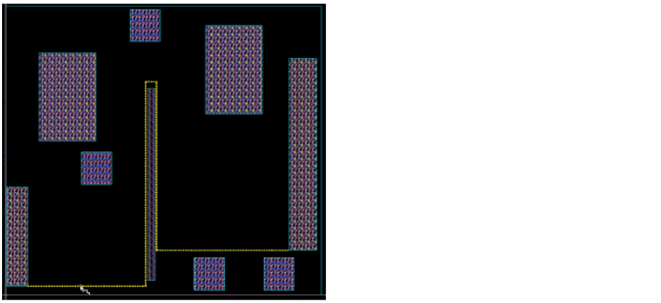
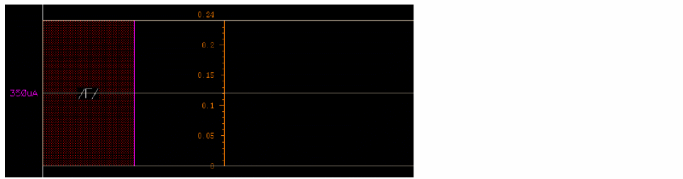
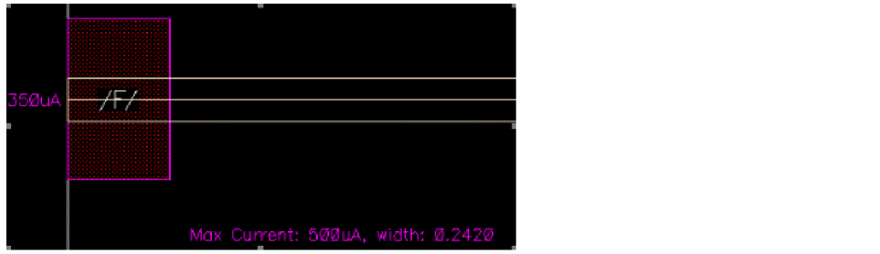
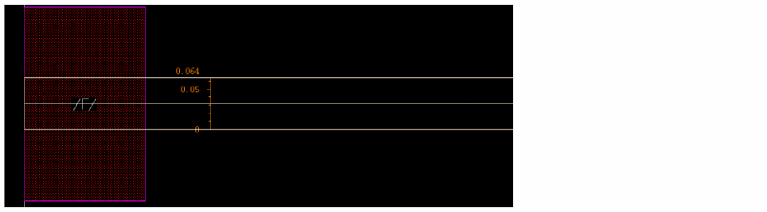

Handling Wire Copies for EM Analysis
You can control the SDR checker mode directly from the CopyRoute tab in the Routing assistant. This lets you adjust the wire width of copies to avoid EM violations. Copy Route eases the routing of a large bus based on a reference wire topology. To handle routing wires for EM analysis:
- Choose Windows – Assistant – Routing. The Routing assistant displays.
- Click the Change routing mode button on the Routing assistant toolbar and select Interactive as the routing mode.
- Click the CopyRoute tab.
- Click the Start copy route button to enable the command.
- Select the Enable Preview option in the Preview section of the Copy Route tab.
-
Click to select the reference wire.
 - Press the space bar to set the reference wire. After the reference wire is set, it is highlighted in the layer color and the arrows are displayed.
- Click and drag the mouse pointer to area select the instance pins that are to be routed.
-
Click SDR Checker Mode
to adjust the width of the selected wires.
When the SDR Checker Mode is set to Enforce, the widths of the previewed wires are computed automatically according to the EM analysis to optimize their size based on the current estimation.
When the SDR Checker Mode is set to Notify, Copy Route indicates the optimal width that should be set on the wires to satisfy the EM analysis for all selected nets. The widths of the previewed wires are computed according to the width specified in the Routing assistant and a label is displayed in the layout canvas giving the maximum current for the copies.
When the SDR Checker Mode is deselected , the widths of the previewed wires are computed according to the width specified in the Routing assistant.

Related Topics
Variables to Customize the Settings for Copy Route
Return to top